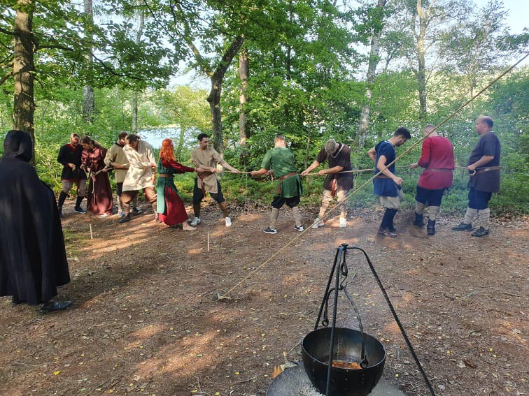
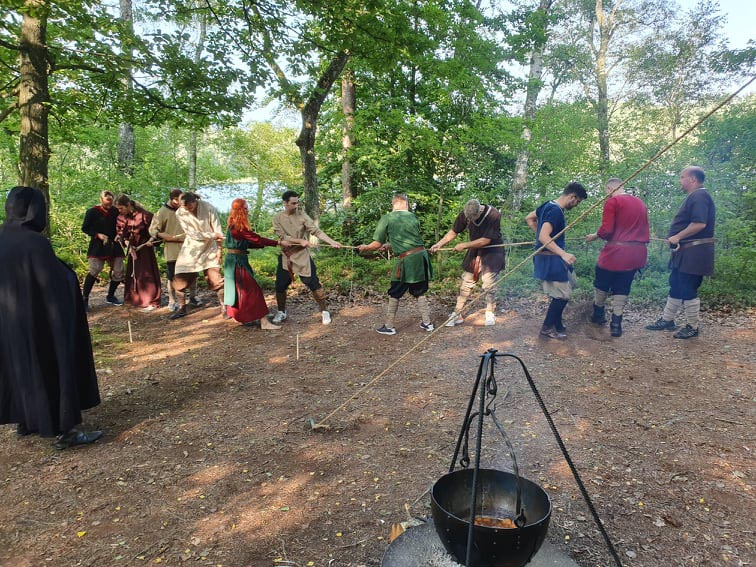
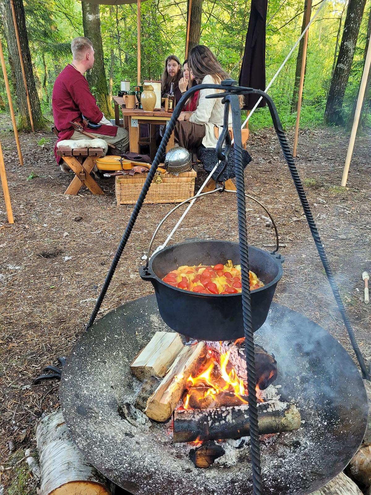
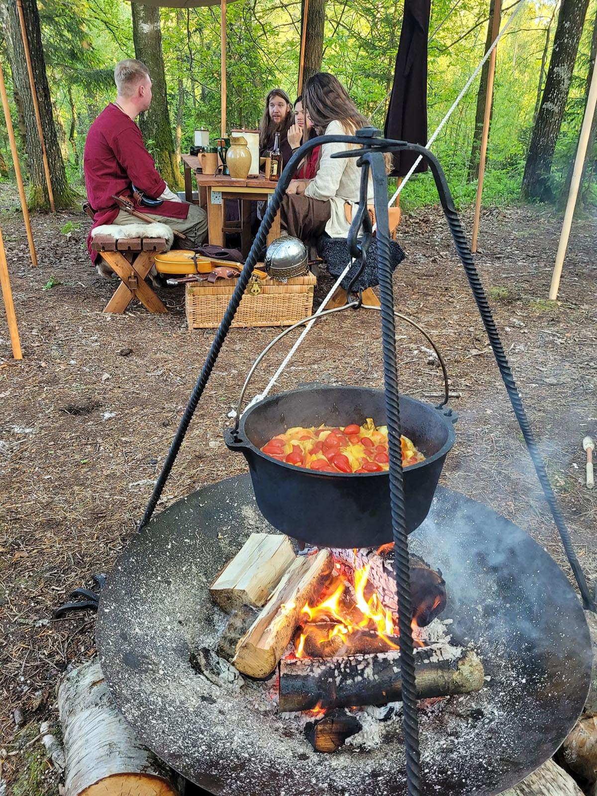

Upplevelser
Mjöd
Priser
Våra Väderingar
Om oss
Kontakt

Uppleverser
Vi erbjuder olika former av upplevelser beroende av vilket paket ni väljer och hur ni skräddarsyr eran upplevelse.
Vi erbjuder yxkastning, pilbågsskytte, en vikingafemkamp, mjödprovning, ett visst antal musikinstrument för den musikaliske och god mat som speglar eran som tillagas på plats.
För mer information


Yxkastning
Under vikingatiden var yxan ett viktigt redskap så väl som vapen under oroligheter.
Därför är yxkastning ett måste under denna upplevelse.
Riktigt skoj med när man lyckas öva upp sina kastfärdigheter.


Pilskytte
Utmana dina kamrater på en duell med en autentisk båge med hästhårsträng!


Femkamp
Utmana dina vänner på en ordentlig vikingafemkamp för att se vem som är den bästa vikingen bland er!
Vinnaren som får mest poäng kan få nöjet att utses som hövding för kvällen.
Kom ihåg alla måste alltid lyssna på hövdingen och göra som han eller hon säger.
Är ett extra roligt tillskott till upplevelsen som helhet. Brukar frambringa en hel del skratt och skoj under kvällen.
 


Mjöd
Det är en speciell känsla att dricka gott mjöd till ett gott sällskap ute i naturen.
Passar utmärkt till denna typ av upplevelse.
Ett måste för den som aldrig tidigare provat mjöd.
Då vi är ett slutet sällskap så funkar det alldeles utmärkt med mjödprovning.
Det finns även några sorter på systembolaget att ta med sig.
Dom drack inte redbull vodka under 900-talet. Därför rekommenderar vi att ni tar med er något som passar i tidsandan.
Mjöd, öl, vin eller alternativt någon kryddig snaps passar fint.
Musik
För en riktigt trevlig stämning så har vi tagit fram en gedigen spellista från Spotify
med all form av medeltidsmusik från när och fjärran.
Passar väldigt bra in i atmosfären.
Men ingen fest utan sång. Vi har sånghäften till några av dem bästa svenska medeltidslåtarna så man kan sjunga med i.
För den som är musikalisk så finns några instrument att plinga och trumma på under kvällen.
Mat
Vad sägs om en meny som består av Njords läckerheter från havet och Tors godsaker från skog och land?
Vi tillagar god mat på plats så som man gjorde på 900-talet. Det är något speciellt med att bland annat se en gryta koka över öppen eld.
Se bilder.
Viktigt att inte glömma att meddela om möjliga allergier i god tid.
Detta gör ni under fliken kontakt.
 
